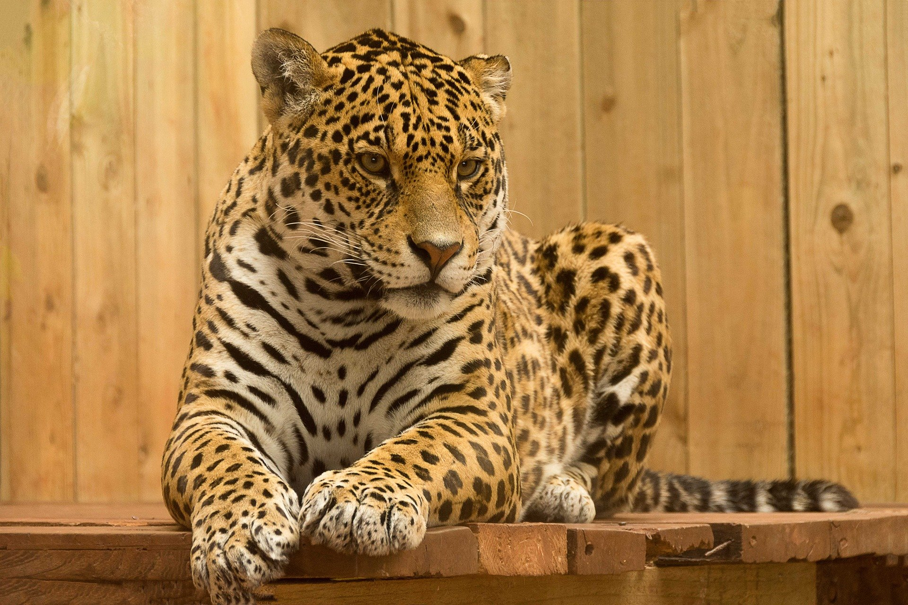
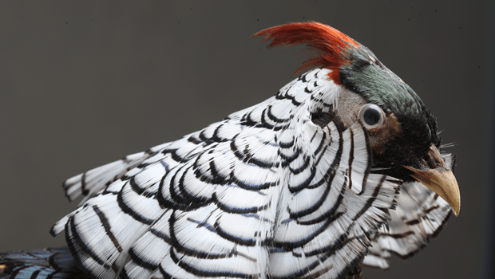

Mamamls
Mammals are part of the class of vertebrate animals that give birth to live chicks. They live in all habitats and total over 5,800 species spread around the globe and 150 of them in our zoo garden.

Reptiles
Reptiles are a class of vertebrates with their bodies covered in thick, scaly, legless, or short-legged skin. They are divided into about 7000 species, of which 200 in our zoo garden.

Fish
Fish are part of the class of vertebrate, skulled animals that live in the aquatic environment. They breathe oxygen dissolved in water and total 29,000 species of fish, of which 100 species in our zoo garden.

Birds
Birds are a group of warm-blooded vertebrates characterized by toothless feathers and beaks. They number over 1200 species, of which 95 in our zoo garden.